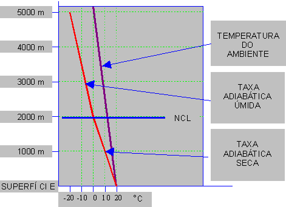
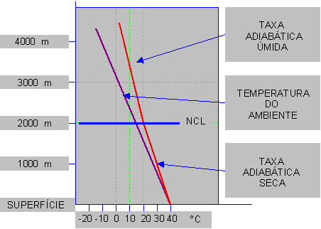
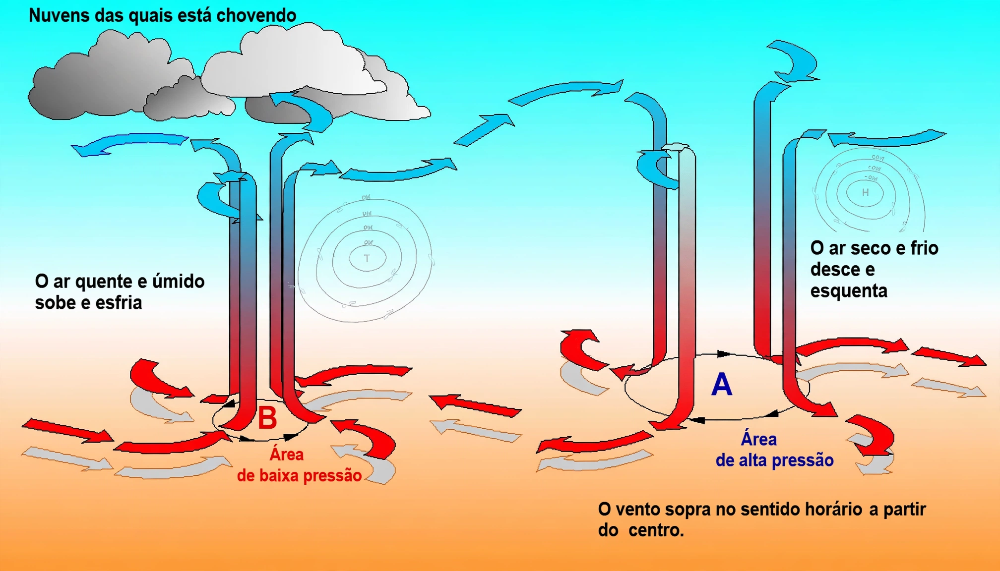

Formação de um tornado?
passo a passo de como o gigante se forma...
Para que um tornado se forme é necessário algumas condições climáticas como:
- Pressão e alta e baixa;
- Uma supercélula;
- Cisalhamento do vento;
- Corrente ascendente;
- Mesociclone;
- Funil e toque no solo.
Instabilidade atmosférica:
Pressão alta e Pressão baixa
A instabilidade atmosférica é uma condição meteorológica na qual parcelas de ar quente e úmido tendem a subir rapidamente na atmosfera, favorecendo a formação de nuvens carregadas e tempestades.
(Esse tipo de fenômeno ocorre pois o fluxo das massas de ar criam regiões de baixa e de alta pressão).
Pressão atmosférica:
mas em que a pressão atmosférica afeta?

Estabilidade absouluta

Instabilidade absouluta
Pressão alta:
A pressão alta é conhecida ser anticiclônica, pois a pressão alta impede formações de nuvens tornádicas e de tempestade.
(Muito conhecida por ser responsável pelo aquele dia ensoralado de céu limpo com poucas nuvens.)
Pressão baixa:
A pressão baixa tem a fama de ser um grande potenciador de gerar nuvens tornádicas e de tempestades severas, a reação causada por esse fenômeno faz com que grandes massas de correntes ascendentes (ar quente subindo) subam violentamente para grandes altitudes, nesses movimentos massas de ar quente e frio se chocam.

Pressão alta: "impede" a formação de grandes tempestades.
Pressão baixa: "potencializa" a formação de grandes tempestades.
Supercélula:
organização e anatomia
Cisalhamento do vento:
a tesoura de vento
Corrente ascendente:
combustível das tempestades
Enquanto o mesociclone é o motor que faz a supercélula funcionar por horas, o cisalhamento vento é o combústivel que faz o motor funcionar com eficiência, se o fluxo da corrente ascendente cessar, a supercélula morre.
Mesociclone:
o motor
Tornados:
a força destrutiva da natureza...
Tornados são o resultado de todas essas etapas que passamos, tornados são um dos eventos meteorológicos de maiores risco que existem, eles são intimidantes.
(Há alguns tornados que seus ventos passam de 350 km/h.)